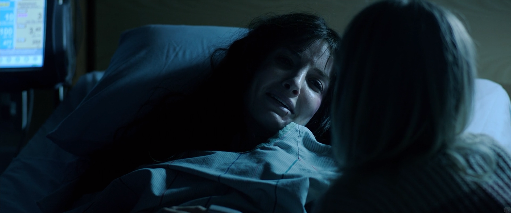
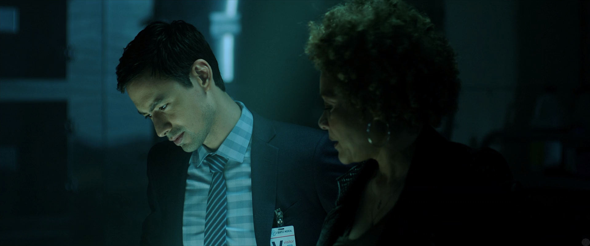

Malignant

I went into this knowing literally 0. All I knew was that it is a James Wan film and that there was some hype around it.
I didn't see a trailer at all, nor did I even know a basic film description going into it.

And despite all of that, I didn't really care for this film. I know that some people have called it campy for its
somewhat laughable moments. But honestly, it isn't campy in my opinion, although it is laughable. The beginning scene
alone had me just asking myself what the hell is going on, and just finding the lines/acting to be so subpar.

I felt like the first half of the film felt fairly interesting/cool, but when the reveal happened I saw it coming. I
wasn't exactly surprised and really just saw it as laughable. I wanted to like the film since the first half felt pretty
solid for the most part. And I mean the cinematography was gorgeous at points.
But overall this film just felt far too silly to be enjoyable for me. It was silly and predictable. And even if someone
tries to say it pays homage to 70s/80s horror and all that, like I love those decades of horror, but I didn't really see
how it was related. Or even how someone could compare it to them.
This film just felt so lackluster in the end and I was just genuinely disappointed with it. I was hoping I was going to
get a film that would blow my mind away. But it honestly just fell flat on its face.